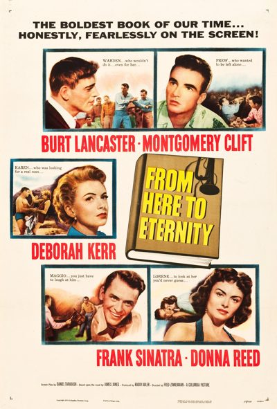

From Here to Eternity

Starring: Frank Sinatra, Ernest Borgnine, Deborah Kerr
Director: Fred Zinnemann
Writer: Daniel Taradash
Producer: Buddy Adler
From Here to Eternity is a 1953 American romantic war drama film directed by Fred Zinnemann and written by Daniel Taradash, based on the 1951 novel by James Jones. It deals with the tribulations of three United States Army soldiers, played by Burt Lancaster, Montgomery Clift, and Frank Sinatra, stationed in Hawaii in the months leading up to the attack on Pearl Harbor.
Trivia
- Won the Academy Award for Best Picture.
- Won the Academy Award for Best Supporting Actress.
- Won the Academy Award for Best Supporting Actor.
- Won the Academy Award for Best Director.
- Won the Academy Award for Best Cinematography, Black-and-White.
- Won the Academy Award for Best Film Editing.
- Won the Academy Award for Best Writing, Adapted Screenplay.
- Won the Academy Award for Best Sound.
- Selected for the National Board of Review: Top Ten Films.
- Also nominated for: Academy Award for Best Actor; Academy Award for Best Actress; Academy Award for Best Costume Design, Black-and-White; Academy Award for Best Original Dramatic or Comedy Score.
- S. Sylvan Simon suggested to Harry Cohn that Columbia buy the rights to the novel and Simon was assigned to make the film but died from a heart attack in May 1951 before he could make preparations for the film.
- Author James Jones was initially hired to write the screen treatment for the film, but withdrew due to disagreements with Cohn.
- Hollywood legend has it that Frank Sinatra got the role in the film by means of his alleged Mafia connections, and it was the basis for a similar subplot in The Godfather.
Filming Locations
- Honolulu
- Joan Crawford and Gladys George were offered roles, but George lost her role when the director decided he wanted to cast the female roles against type, and Crawford's demands to be filmed by her own cameraman led the studio to take a chance on Deborah Kerr, also playing against type.
Previous Showings
3 Runs • 1 Festival
All runs on record (3):
- December 7 - 9, 1991w/ Sergeant York
- May 20 - 21, 1993w/ The Lost Weekend
- May 30 - 31, 2013The 1950sw/ Clash by Night